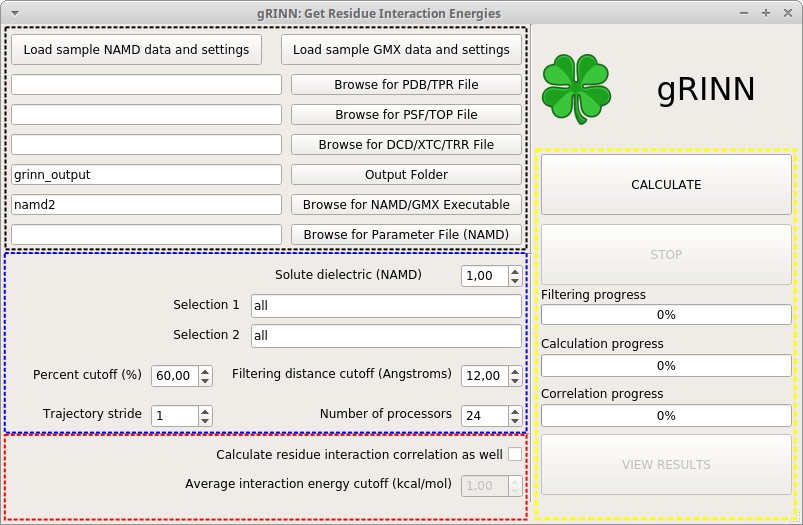
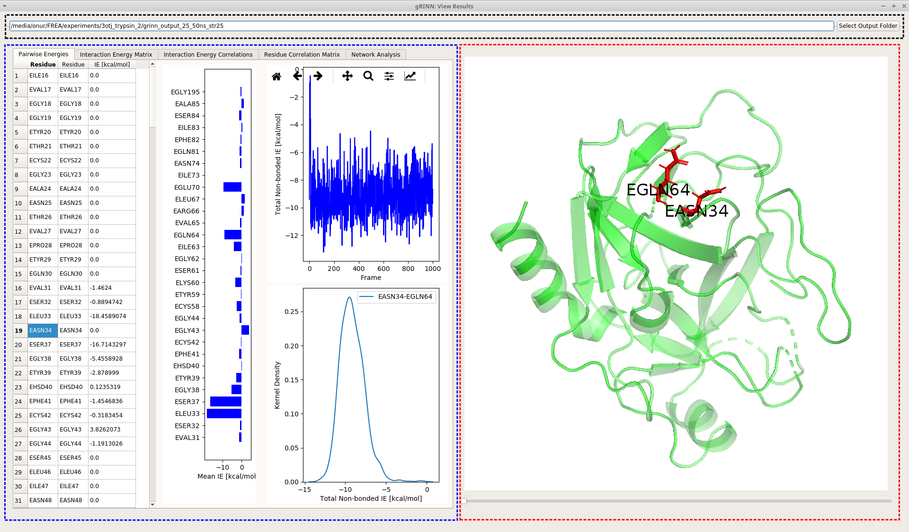
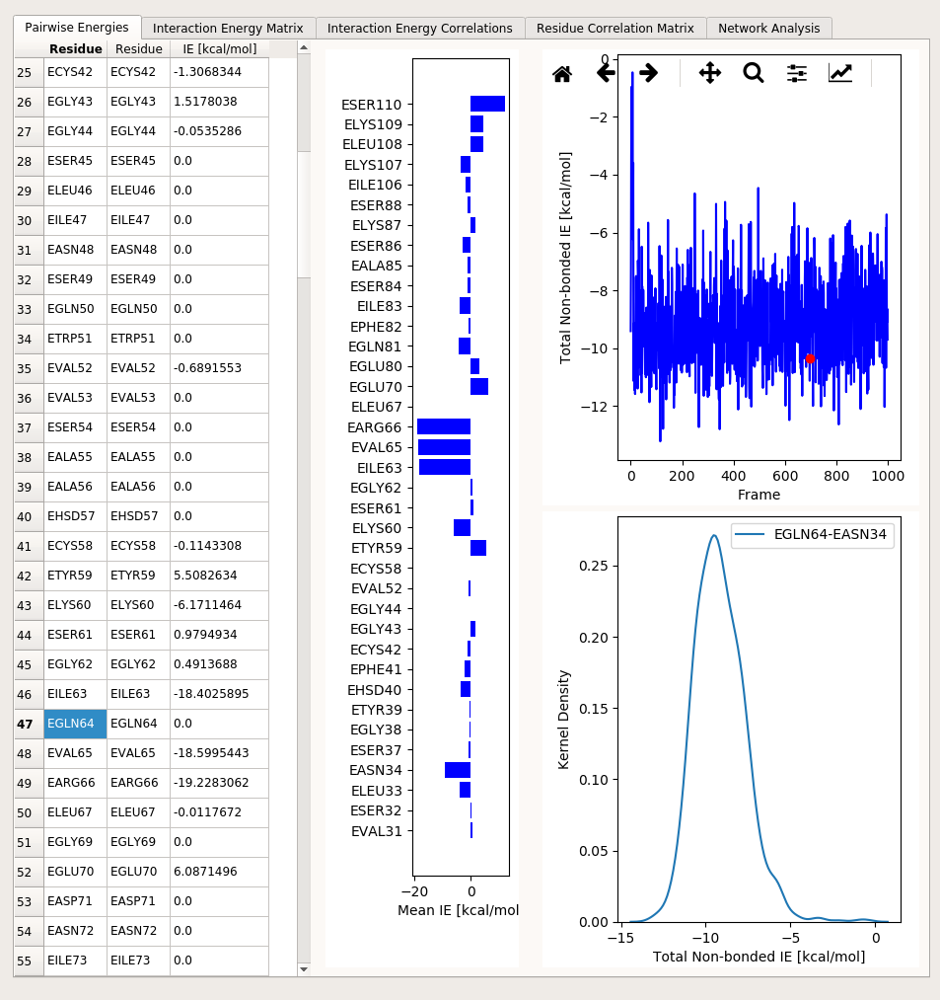
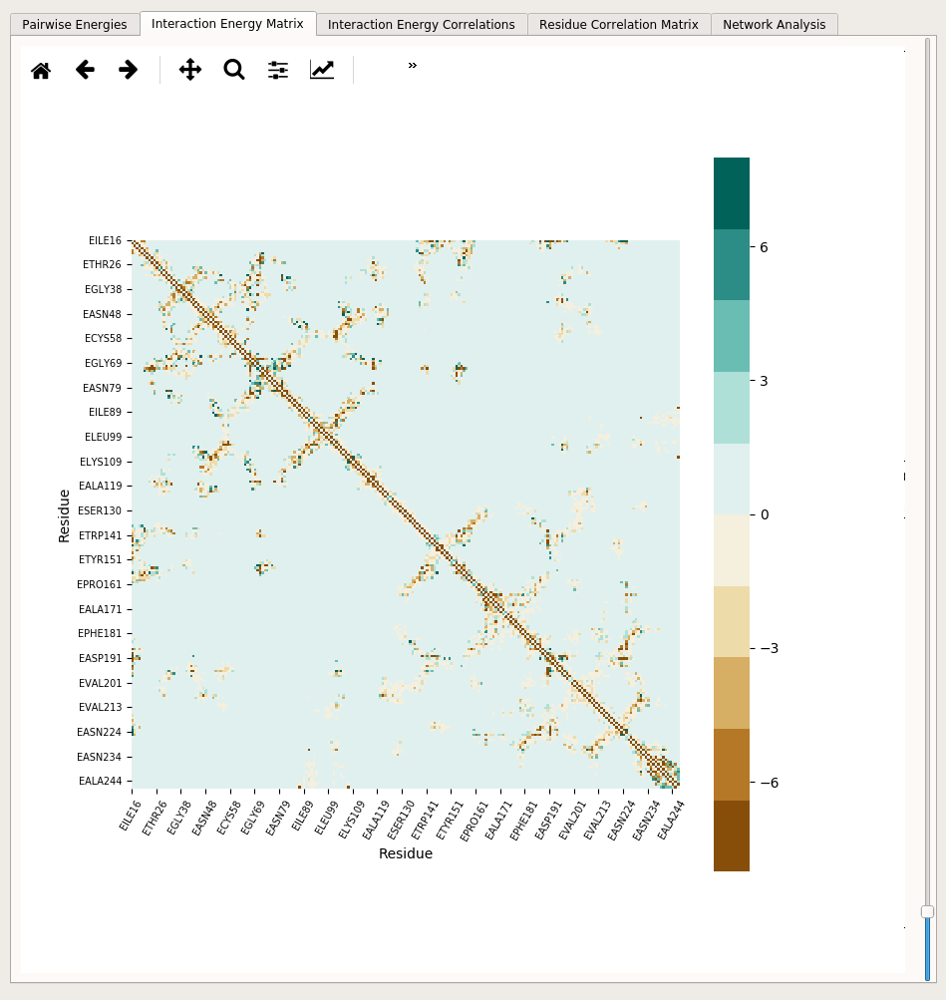
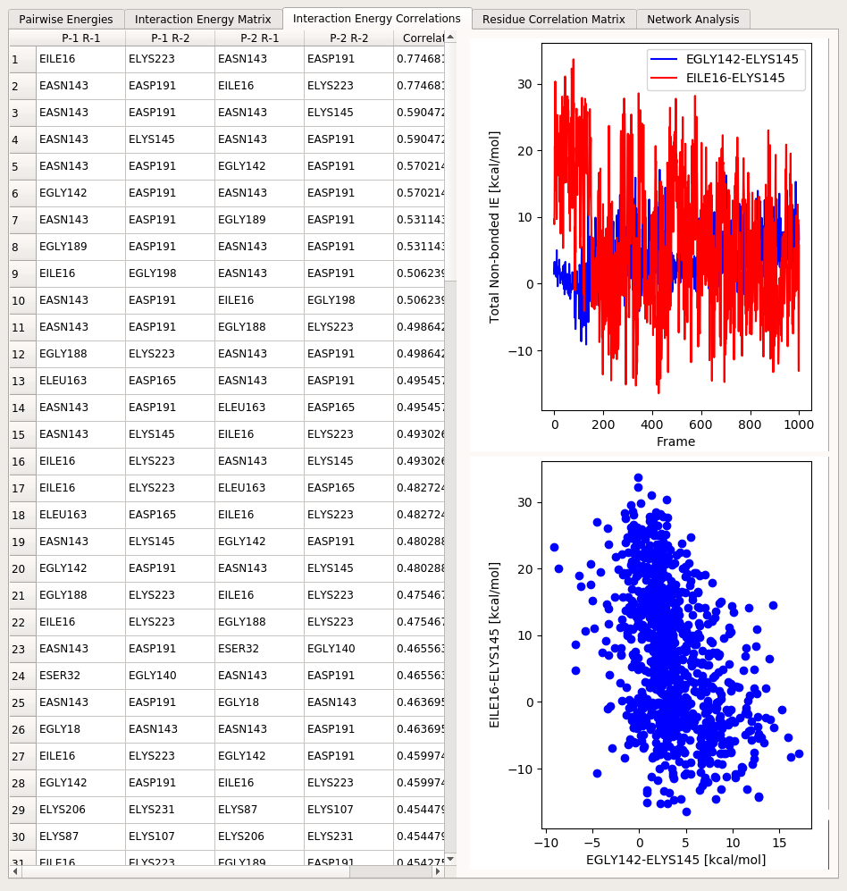
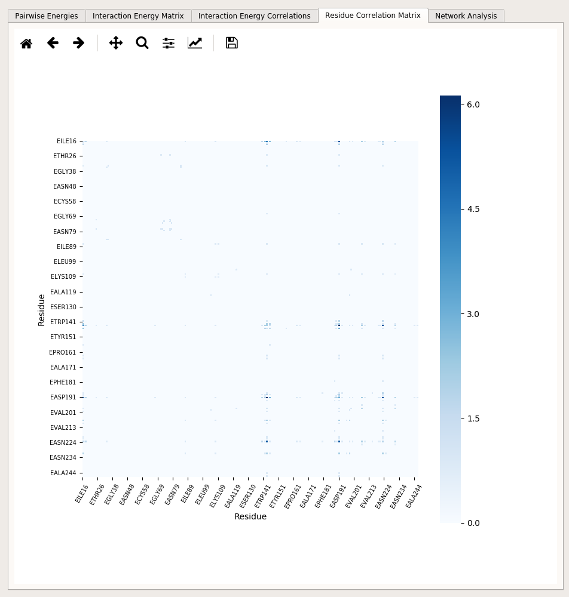
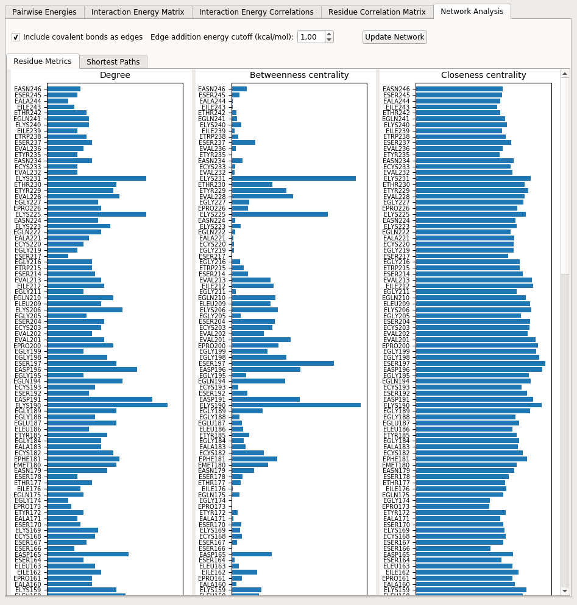
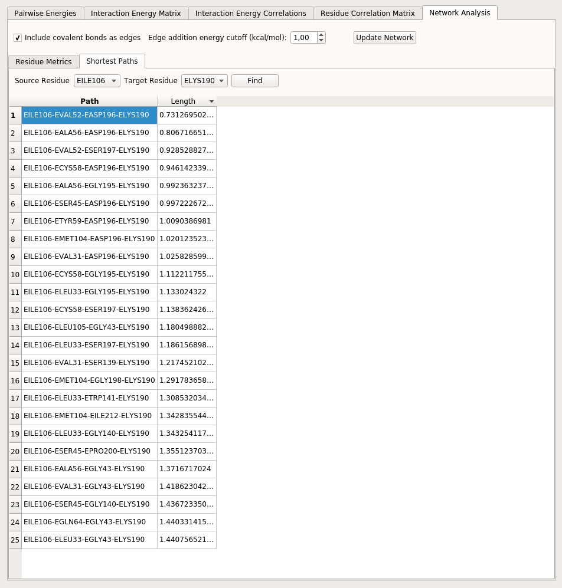

Tutorial¶
Dependencies¶
gRINN was designed to work with NAMD or GROMACS-generated MD simulation trajectories, hence topology, structure and trajectory files are expected. Moreover, the tool interoperates with NAMD or GROMACS -depending on which type of input data you give as input-, so you will need to provide the location of the NAMD or GROMACS(gmx) executable you’ve used for simulation prior to the start of calculation.
Since you’re interested in using this tool, you’re probably already a user of either NAMD or GROMACS; however, if the executable is for some reason not installed/located on your system or if you’re just interested in trying out the tool, you should obtain and install them from the respective developers as we can’t distribute them ourselves.
Download NAMD here. (Please use a non-CUDA multicore version)
Download GROMACS here.
Please note that downloading NAMD requires registration. Recommended versions are NAMD 2.12b and GROMACS 5.1.4 (although we expect any NAMD version above 2.9 and any GROMACS 5.x version to work fine with gRINN)
Preparing input data (for NAMD-generated trajectories)¶
In this tutorial, we will use sample NAMD data from a short MD simulation of the trypsin enzyme. Therefore, this step is not required for completing the tutorial. You are, however, advised to delete solvent molecules from your input Protein Data Bank (PDB), Protein Structure File (PSF) and DCD files before using gRINN with your own data.
Due to the way gRINN interoperates with NAMD, deleting solvent molecules from the input PSF/PDB and DCD files is usually necessary before using the tool. gRINN does not offer such functionality, however this can be done using standart software such as VMD.
If you have used psfgen or VMD’s Autopsf plug-in, usually the first PSF/PDB pair generated during system preparation for MD simulation prior to solvation step is what you need. The only step that you need to do then is to remove the solvent from the DCD . This can done by loading the trajectory into VMD and saving the coordinates of only the “protein” into a new DCD file.
Start the Application¶
If you have not done already, start gRINN by following the steps below:
- Download the archive suitable for your OS (currently only Linux and Mac OSX is supported) and extact the contents to a folder of your choice.
- For Linux: open a terminal in that directory and start gRINN by typing
./grinn. Alternatively, you can navigate to another directory, open a new terminal and start grinn by typing the full path of grinn. - For Mac OSX: simply double-click the extracted application bundle. If that fails, follow the steps for Linux.
gRINN Main Window¶
Upon execution of grinn, the following window appears:

This is the main window of gRINN. Several links at the bottom direct the user to respective sections of this website.
gRINN offers two interfaces: New Calculation and View Results. New Calculation is used for pairwise residue interaction energy and interaction energy correlation calculations (optional). View Results is used to visualize results from New Calculation and construct Protein Energy Networks using these data.
Go ahead and click on New Calculation now.
gRINN New Calculation (Get Residue Interaction Energies)¶
You should now see a window like the following one:

This is the New Calculation interface. gRINN New Calculation is used to:
- specify input files, NAMD/GMX executables and other custom calculation settings
- start interaction energy and/or correlation calculations
- monitor the progress of computation
- start “View Results” interface once the calculation is complete.
The New Calculation UI elements can be grouped into four main parts based on their functionality. These are shown in the snapshot above in various color frames. We shall first describe the interface, then load sample NAMD data and start a calculation.
Input files, output folder and NAMD/GMX executable paths¶
The black frame includes UI elements for specifying the input files and the output folder. Full paths to PDB/PSF/DCD files (in case of NAMD data) or TPR/TOP and XTC or TRR files (in case of GROMACS data) can be specified either by typing/pasting the full file path to corresponding text edit boxes or via browsing by clicking the “Browse for…” buttons.
Output folder specifies the folder in which gRINN results are stored. Note that the output folder you specify should not exist prior to calculation. “Output Folder” button should be used as a convenience for selecting a parent folder of the output folder path you specify.
For NAMD, at least one additional parameter file, containing the parameters included in the force-field you’ve used for simulation, is required. If you’ve used more than one parameter file, you can specify the full paths to these files in the text box by leaving one blank space between them. Alternatively, you can put all parameter files in the same directory and then select them via “Browse for Parameter File (NAMD)” button.
Calculation settings¶
The blue frame includes UI elements for specifying the settings used for non-bonded pairwise residue interaction energy calculations.
Solute dielectric (NAMD) specifies the dielectric constant that is used while computing the electrostatic component of the interaction energy (dielectric keyword in the NAMD configuration file). The default value is 1.0, which means that the electrostatic interactions will not be modified. Any value larger than this value lessens the electrostatic forces. More information can be found in NAMD User Guide.
Selection 1 and Selection 2 define custom atom selections that include residue groups between which non-bonded interaction energies will be computed. ProDy atom selection syntax is used here.
Note
This setting is useful if you’re only interested in pairwise residue interactions in a specific subset of your protein. If you want a full characterization, leave these selection at the default setting (all). Note that using a custom residue selection here will also lead to incorrect Protein Energy Network (PEN) construction later on while using the “View Results” interface.
Percent cutoff and Filtering distance cutoff settings specify criteria for selecting pairs of residues between which non-bonded interaction energies will be computed. Default values are 60% and 12 Angstroms, meaning that only pairs of residues whose centers-of-mass come closer than 12 Angstroms in at least 60 percent of trajectory frames will be included. For NAMD calculations, this specifies the cutoff distance for non-bonded interactions as well.
Trajectory stride specifies a stride value for the input trajectory. For example, if you have 1000 frames in your trajectory and set a value of 10 here, every 10th frame will be included in the calculation, yielding a total of 100 frames. Default stride value is 1 (all frames are included).
Number of processors specify the number of CPU cores to be used. The default value is the number of cores available in your system. This option is useful in cases where you have another CPU-intensive process running in the background and don’t want to employ all available resources for gRINN.
Correlation settings¶
The red frame includes UI elements for activating residue interaction energy correlation (Pearson’s product moment).
Calculate residue interaction correlation as well check box enables/disables correlation calculation between interaction energy time series.
Average interaction energy cutoff specifies a cutoff for correlation calculations. Interactions with mean energy values below this cutoff value will be excluded from correlation calculations.
Note
Correlations are reported only if the value is significant (i.e. Pearson’s r above 0.4) to reduce the noise in the reported data and maintain the output file size.
Starting and monitoring the calculation¶
The yellow frame on the right side of the UI includes two buttons for starting and stopping the calculation and three progress bars to monitor the completed percent of the three steps involved in calculation. Finally at the bottom a button to start View Results interface is included, which becomes activated only upon successfull completion of an interaction energy calculation task.
CALCULATE button, when pressed, will first check the input (files, settings, whether the output folder exists, etc.). If valid input is detected, computation starts with filtering of interacting pairs. Pairwise residue interaction energies are computation in the second step. Final step, correlation, is done only if the corresponding checkbox is selected.
STOP button is for stopping the operation of gRINN. This is useful if you notice that you need to change a setting after starting the operation or simply want to cancel it.
Note
Note that the STOP button does not pause the operation. You need to start all over again if you click on this button (A warning is spawned for confirmation to prevent accidental clicking here).
Start calculation with sample NAMD data¶
Let’s load some sample data and start a calculation to see how gRINN works. Click on load sample NAMD data and settings.
You will see that the input file UI elements are now populated with some values. The top three text boxes include paths to PDB, PSF and DCD files from a 50 nanoseconds-long MD simulation of bovine cationic trypsin (structure extracted from PDB id 3OTJ).
Note
Note that the PSF and PDB files correspond to a step prior to solvation step during preparation of the system for MD simulation using VMD and psfgen. Solvent molecules in the DCD trajectory were removed by using VMD.
Note
The DCD file corresponds to an equilibrium stage of simulation (between 25 and 50 nanoseconds). A stride value of 25 was applied in order to reduce the file size bundled with gRINN.
The path of the output folder is set to grinn_output in the current working directory. It is safe to change this path as long as it does not exist before starting the calculation.
The path of the NAMD executable is set to namd2 by default. This requires that a valid NAMD executable is present in the executable search path of your system (in linux, this is the PATH environment variable). If namd2 is not accessible via the executable search path, provide the full path here.
Parameter file text box is filled now with the path to the parameter file used for the sample MD simulation.
Click on CALCULATE now. After an initial input checking step, gRINN should start by filtering the residue pairs to be included in interaction energy calculation. Once this is complete, interaction energies will be calculated, followed by equal-time correlation calculations. Depending on the capacity of your computer, the operation should last between a few minutes and an hour or two. You can follow the progress by keeping an eye on the progress bars which will show the estimated amount of remaining time as well.
Once gRINN finishes operation, you will be notified and VIEW RESULTS button will be enabled. You can now proceed to viewing the result either by clicking this button or View Results button on the gRINN Main Window.
gRINN View Results¶
Upon starting View Results interface, you will be immediately prompted to browse and select an folder containing results from the previous step in gRINN. This is typically the output folder you specified previously.
Go ahead and select this output folder now.
If the folder is valid, you will see the message Please click OK to start loading your data…. Just click OK to proceed.
After some time, another message will appear, saying A trajectory exists in your output folder. Would you like to load it as well? Warning: This might slow down the display significantly if the trajectory file size is large.. Click Yes to proceed.
Note
If you choose No here, the trajectory will not be loaded and the sliding bar to control the frame displayed in the molecular viewer embedded in the interface (see below) will be disabled.
Once all of the output is loaded into the UI, you will see the View Results interface looking like the following figure:
{kind=link}

View Results interface can be separated into three main parts based on the functionality of UI elements.
The black frame includes a text box and a button for selecting an output folder. Upon selecting an output folder by using the button, the contents of that folder (if it is a valid gRINN output folder) will be loaded, discarding the currently displayed output (if there’s any).
The red frame includes an embedded molecular viewer (which is a PyMol instance) that is updated upon interaction with the blue frame UI elements. How this occurs is explained in the relevant section of for each tab in the following. The PyMol viewer allows zoom-in and out (rmb), rotation(lmb while on protein) and translation (middle mouse button) via interactions with the mouse.
The blue frame includes UI elements, organized into several tab panels. The results displayed in this section are extracted from the files included in the output folder. The content of each tab is explained below.
Pairwise Energies¶
Pairwise Energies tab includes several UI elements that display individual pairwise residue interaction energies. The UI looks like the following:

On the left, a table shows you average interaction energies between selected pairs of residues. Due to the excessively high number of all possible pairwise interactions even in a small protein, not all pairs are displayed at once in this table. Instead, only one interaction pair is selected at one time via clicking relevant cells of the table. The selected item of the first column determines the first residue in an interaction pair. The selected item of the second column determines the second residue in an interaction pair.
So, for example, if you click on residue EGLN64 in the leftmost column, the average interaction energies with all other residues with this residue are displayed in the third column of the table. In addition to this, the vertical bar plot right next to the table is updated to reflect non-zero interaction energies of all other residues with the residue selected in the leftmost column of the table. If you then click on EASN34 in the second column, the interaction pair is updated as EGLN64 and EASN34. This will cause the plots in the right hand side of this tab to reflect interaction energy time series and distribution of these two residues over the trajectory frames.
Note
gRINN identifies residues with chain ID, amino acid type and the residue number. For example, EASN34 here just means the residue 34 (ASN) of chain E in the protein structure.
Once you select an interaction pair this way, the protein structure that is displayed in the molecular viewer embedded on the right will reflect this pair of residues as well.
Note
gRINN uses kcal/mol as the energy unit.
Interaction Energy Matrix¶
Interaction Energy Matrix tab includes a heat map that displays average interaction energies between all pairs of residues:

The heatmap shows so-called energetic “hot-spots” in the protein structure. Many of these spots correspond to secondary structure, disulfide bonds as well as residues that are not sequence neighbors but in close contact with each other in the folder protein structure. The heatmap can be zoomed in & out and saved into a file using the toolbar included. The upper and lower boundaries of the heatmap can be adjusted by using the sliding bar located on the right side of the heatmap.
Interaction Energy Correlations¶

Residue Correlation Matrix¶

Network Analysis¶


HERE MAYBE SOME NOTE TO GIVE THE USER A TASK TO COMPARE THE BPTI+TRYPSIN STRUCTURES?
Output folder content¶
If the gRINN completed the operation successfully, you should see the following files in the output folder:
- traj_dry.dcd
- system_dry.psf
- system_dry.pdb
- network.gml
- grinn.log
- energies_resIntCorr.csv
- energies_resCorr.dat
- energies_intEnVdW.csv
- energies_intEnTotal.csv
- energies_intEnMeanVdW.dat
- energies_intEnMeanTotalList.dat
- energies_intEnMeanTotal.dat
- energies_intEnMeanElec.dat
- energies_intEnElec.csv
- energies.pickle